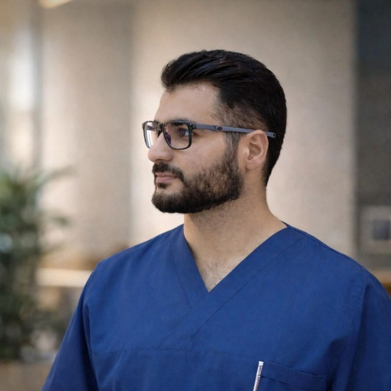

خريج الكلية التقنية الطبية – قسم البصريات الطبية، وأعمل في هذا المجال منذ عدة سنوات، مع اهتمام مستمر بالتطوير العلمي والمهني، وحاصل على ما يقارب ثلاثين شهادة في مجالات متعددة.
اقرأ المزيد
أنا يونس عبد القادر محمد غريب، خريج الكلية التقنية الطبية – قسم البصريات الطبية، وأعمل في هذا المجال منذ عدة سنوات مع اهتمام مستمر بتطوير نفسي علميًا ومهنيًا.
حصلت على ما يقارب ثلاثين شهادة في مجالات مختلفة، وأسعى إلى الجمع بين المعرفة الطبية والثقافة الإنسانية والفكرية، مع اهتمام خاص بالتأليف ونشر المعرفة.
أؤمن بأهمية تطوير الإنسان علميًا وفكريًا واجتماعيًا، ولذلك كتبت في مجالات متعددة تجمع بين الطب، والمجتمع، والفلسفة، وعلم النفس، واللغة.
شهادة تقريبًا في مجالات متعددة
كتاب في مكتبة البصريات الإلكترونية
كتابًا في مجالات متنوعة
أمتلك مكتبة إلكترونية في مجال البصريات تضم ما يقارب 8000 كتاب متخصص في مجال العين البشرية، بهدف دعم المعرفة العلمية وتوفير مصادر متقدمة للمتخصصين والمهتمين.
أعمل مديرًا لملتقى أخصائي البصريات، وأسعى من خلاله إلى تبادل الخبرات والمعلومات بين المختصين، وتعزيز التعاون العلمي والمهني في هذا المجال.
كما أهتم ببناء محتوى علمي وثقافي متوازن يجمع بين المعرفة الطبية والرؤية الإنسانية.
قناة متخصصة أشارك فيها معلومات طبية متعلقة بالبصريات ومحتوى علمي مهني يفيد المختصين والمهتمين.
قناة أنشر فيها محتوى ثقافيًا واجتماعيًا وفلسفيًا ولغويًا يعكس اهتمامي بالتأليف والفكر وتطوير الوعي.